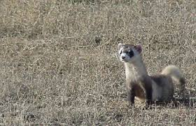
Arthur Morgan
El líder con corazón de oro.
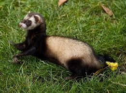
Joel Miller
Protector y valiente.
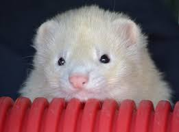
Copito
Blanco como la nieve.
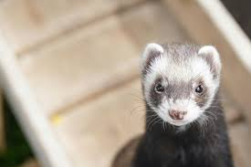
Bandido
Experto en travesuras.
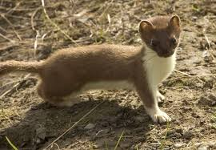
Canelo
Tan dulce como su nombre.
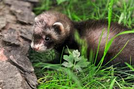
Chocolate
El rey de las siestas.
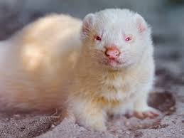
Dante
Un pequeño aventurero.
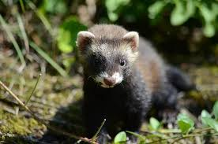
Foxy
Astuto y veloz.
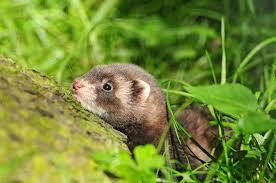
Katsy
Energía inagotable.

Somita
Pequeña gran amiga.
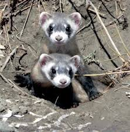
Tashaylatifa
La reina del refugio.
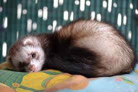
Violet
Elegante y curiosa.